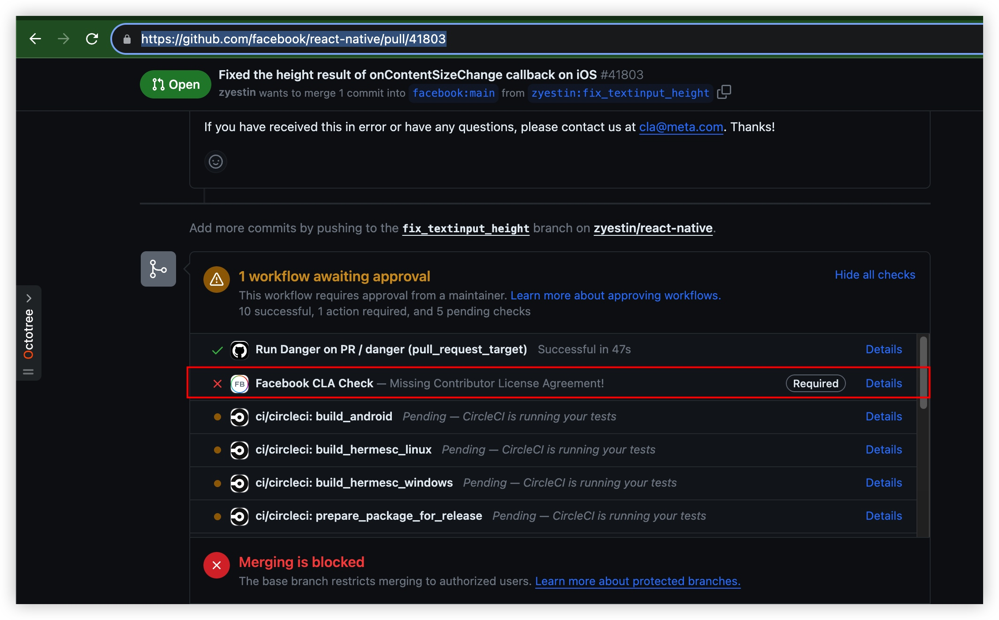
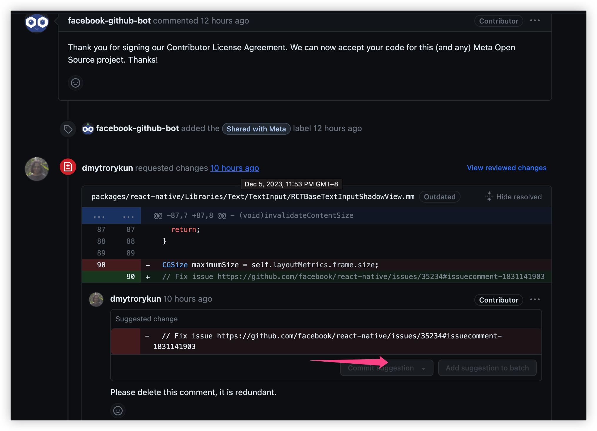
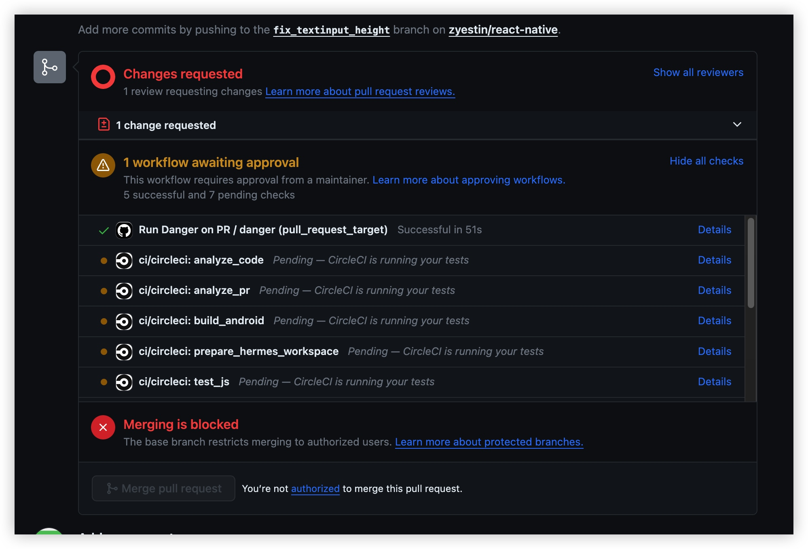
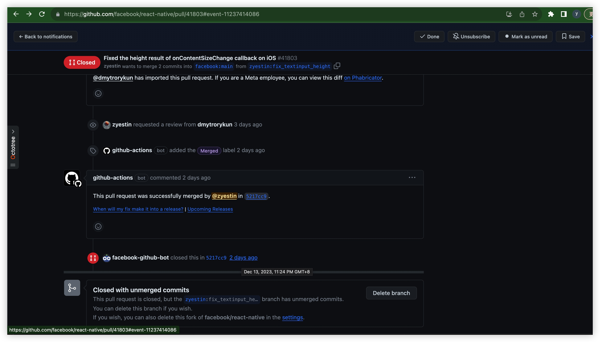

第一次提交PR给react-native
By yestin
用了3年RN了，第一次给RN提交PR，有点激动，值得记录呀！
操作记录
git操作全在github完成
- 2023.12.05 7:52PM 提交
fork -> 创建分支 -> 改代码 -> 提交
然后进入pull request tab ，就能看到Compare & pull request入口，点击它
生成的PR地址： https://github.com/facebook/react-native/pull/41803
然后就进入 PR描述编辑区，按提示编辑完，提交即可
首次提交PR，提示需要签署CLA

跳转到这里 https://github.com/facebook/react-native/pull/41803/checks?check_run_id=19326140445
再打开 https://code.facebook.com/cla， 进行签署CLA

签署后，这个页面就进入一个无法编辑的状态，虽然顶部有提示，如果在签CLA之前已经提交了一个，再耐心等待会，会自动处理的
于是，从21:49，等啊等，到了 23:54，才有反馈

第二天早上一看 10:13，还给了我建议，我点击一下 Commit suggestion就ok了
最后就差maintainer批准了

一般多久批准呢？ 浏览了2个merged的PR，都是2天
- 2023.12.13 11:24PM 终于收到邮件 PR被合并
This pull request was successfully merged by @zyestin in 5217cc9.
- 并且紧接着收到邮件 PR被关闭
Closed #41803 via 5217cc9.

那何时 带有我贡献的代码 会被发布呢？
等待下一个版本被推出的时候咯
待续~